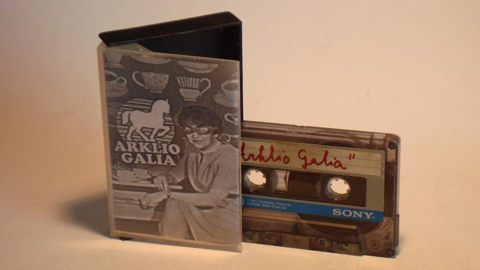

Ä¼Ć¦Ā½ v i e Ä¼Ć¦Ā½ i e n o s , m e s , g a r s e l i s , v a i z d e l i s.
Senienos (Ä¼Ć¦Ā½pargalkė)
12. 11
Vakar atiturėjom 70-ą
koncertą. Tautvis nebe d[pčiūvas. ReportaÄ¼Ć¦Ā½as:

12. 05
Čia tokie chaziajnai pakeitė svetainės slaptaÄ¼Ć¦Ā½odį for security reasons tai neiÄ¼Ć¦Ā½ėjo niekaip atnaujinti. Dabar atrodo viskas tvarkoj. Vakar grojom Tarantino Clube, buvo toks dūmų slėgis kad Tautvydui Augustinui sulūÄ¼Ć¦Ā½o gitara ir pasidarė penkiastygė iĆ…ļ£¼ Ä¼Ć¦Ā½eÄ¼Ć¦Ā½iastygios. Viena daugiau, viena maÄ¼Ć¦Ā½iau, koks skirtumas. KaÄ¼Ć¦Ā½kas paÄ¼Ć¦Ā½adėjo, kad Ä¼Ć¦Ā½iandien grosim dar kaÄ¼Ć¦Ā½kur.
11. 23
Laukas lauku, o Ä¼Ć¦Ā½alikas Ä¼Ć¦Ā½aliku, prasivėria statinės nuo Ä¼Ć¦Ā½alčio. Vakar grojom tokiam mokytojų namų kiemely kiemyli. Buvo graÄ¼Ć¦Ā½i diena ir maudėmės iĆ…ļ£¼sirengę saulės spinduliuose.
11. 21
Pagrojom pirtyje. Buvo karÄ¼Ć¦Ā½ta. Daug nuotraukų atsirado, nes mergos fotkino su mūsų fotiku.
11. 20
GrįÄ¼Ć¦Ā½om iĆ…ļ£¼ Alytaus alaus gėrimo varÄ¼Ć¦Ā½ybų sveiki gyvi.
11. 17
Eimantas daug miega, uÄ¼Ć¦Ā½tat paskui paskambina ir sako, kad jam skambino Julija DluÄ¼Ć¦Ā½nevskaja tiesiai iĆ…ļ£¼ Frekenbok ir mes grosim kaÄ¼Ć¦Ā½kur Ä¼Ć¦Ā½eÄ¼Ć¦Ā½tadienį vidury dienos.
11. 13
Ä¼Ć¦Ā½iandien reputavomės ir fotografavomės. Nuotraukų yra internete galima rast. Tautvydas talentingas muzikantas, Vidas meliodijų prigalvoja oi prigalvoja, Eimantas per dainą groja kaip moka, o Ä¼Ć¦Ā½ilvinas baubia ir man toks jausmas, kad tu garsėji vis. Nuotraukų iĆ…ļ£¼ būsimų koncertų dar cha cha nėra!
11. 11
Dar nuotraukų iĆ…ļ£¼ didelio Kauno renginio. Visos graÄ¼Ć¦Ā½ios ir profesoralios.
11. 11
"Arklio Galia" kiek tai koncertų susiveikė. PaÄ¼Ć¦Ā½iūrėkit.
10. 27
"Arklio Galia" vakar sugrojo Woo klube kaip ir Ä¼Ć¦Ā½adėjo. Pagrojo daug dainų. Sekantis koncertas kaÄ¼Ć¦Ā½kada.
10. 19
Arklio Galia vietoj spalio 22-os dienos gros 26-ą Animacinių filmų festivalio uÄ¼Ć¦Ā½daryme "Woo" klube. dar dar dar nuotraukų iĆ…ļ£¼ Kauno.
10. 18
BiÄ¼Ć¦Ā½kis naujų nuotraukų iĆ…ļ£¼ praėjusių koncertų.
10. 15
GrįÄ¼Ć¦Ā½o Milda, Eimantas patapo barmenu vadybininku, o Ä¼Ć¦Ā½ilvinas padarė nemokamai atsisiųsti Arklio Galios Kosmodiską nes jau pardavėm beveik viską, ką turėjom. Rytoj repetuojam.
10. 03
Senas Kuinas susikūrė frype.lt profilį!
10. 02
SuduÄ¼Ć¦Ā½o lempa ir viltys. Ä¼Ć¦Ā½ukės pabiro vienybės aikÄ¼Ć¦Ā½tėj. Be lempos trąÄ¼Ć¦Ā½os nebegroja, todėl VDA buvo paskutinis kartas kai jas atlikome. Dabar galima bus Ä¼Ć¦Ā½itos dainos paklausyt kitos tokios grupės koncertuose. Kauno koncerto vedėjas buvo negeras Ä¼Ć¦Ā½mogus. Linkėjimai jam.
10. 02
Vakar Vilniaus Dailės Akademijoje nuaidėjo Arklio Galia. Pristatė savo uÄ¼Ć¦Ā½mirÄ¼Ć¦Ā½tų demo dainų rinkinį "Vienas Rimtas". Galima parsisiųsti diskografijos skiltyje. Greit galima bus parsisiųsdinti ir Arklio Galios Kosmodiską, kai tik iĆ…ļ£¼keliaus į kaÄ¼Ć¦Ā½kieno rankas paskutinė CD kopija.
09. 28
Kaip sakoma, kai kalbi su Holmsu, reik keiktis kaip iĆ…ļ£¼ kibiro. Kiauro kibiro. Arklio Galia padarė posėdį totorių gatvėj ir nusprendė savo planus artimiausiems 10-iai metų. Dar buvo tokia Ieva A. Kol kas Arklio Galios planuose vieÄ¼Ć¦Ā½patauja singeris songraiteris Algis Fediajevas su savo daina "Kolūkietis". Visi kiti planai paslaptyje. Greit atvaÄ¼Ć¦Ā½iuos Milda.
09. 24
Toks vebmasteris Ariūnis perkelė puslapį į kitą serverį idant greičiau krautų. Dar iĆ…ļ£¼ internacionalinių paskatų padarė minipuslapiukus kitom kalbom dėl viso pikto. Kol kas angliÄ¼Ć¦Ā½kai, rusiÄ¼Ć¦Ā½kai, lenkiÄ¼Ć¦Ā½kai ir vokiÄ¼Ć¦Ā½kai. Kai atras specialistų, padarys dar ir dar ir dar ir kol bus visom kalbom.
09. 17
Mums paskambino ir pasakė kad pagrosim VDA menistų Ä¼Ć¦Ā½ventėj. Spalio 1.
09. 14
Arklio Galia grįÄ¼Ć¦Ā½o iĆ…ļ£¼ Ignalinos koncerto Osmosas. Buvo linksma, liūdna, Ä¼Ć¦Ā½alta, Ä¼Ć¦Ā½lapia ir visaip. Sekantis koncertas Kaune, vienybės aikÄ¼Ć¦Ā½tėje spalio antrą dieną. Bus dar Ä¼Ć¦Ā½alčiau nei vakar ir reiks dar striukių. Prisiminėm, kad reik paraÄ¼Ć¦Ā½yt internetiniame puslapy būtinai: "Siųskite mums nuotraukas iĆ…ļ£¼ koncertų adresu arkliogalia@walla.com ir mes įdėsim jas į galeriją".
09. 06
ArkliO Galia atiturėjo Ä¼Ć¦Ā½eÄ¼Ć¦Ā½deÄ¼Ć¦Ā½imtą sau koncertą. Baltuose drambliuose su Ä¼Ć¦Ā½vento Sodo grupe. Nusprendė, kad reik veÄ¼Ć¦Ā½iotis kubus su maÄ¼Ć¦Ā½ina. Ačiū eilinį kartą visiems.
09. 05
Atrodo, kad, kai mes pasensim ir surūdysim, su blizgančia Ä¼Ć¦Ā½irdimi prisiminsim dienas, kai net negalėdavom iĆ…ļ£¼praÄ¼Ć¦Ā½yti Ä¼Ć¦Ā½iūrovų iĆ…ļ£¼ koncerto kaip Ä¼Ć¦Ā½iandien Musėje. Tikrai galim teigti, kad tai geriausias Vilniaus muzikinis klubas. Ačiū Ačiū Ačiū. Rytoj bus 60-asis Arklio koncertas. Ir dar ačiū visiems, kurie pirko diskus. Jūs.
08. 27
Arklio Galia jau perklausė "Arklio Galios Kosmodiską". Tuo tarpu rugsėjo 6-ąją Baltuose Drambliuose apÄ¼Ć¦Ā½ildysim Ä¼Ć¦Ā½v.Sodą.
08. 24
Arklio Galia po beveik trijų mėnesių pertraukos vėl surengs koncertą Vilniuje. Rugsėjo 5 dieną, 21 val. klube "Musė", A.JakÄ¼Ć¦Ā½to gatvė 9. Kartu gros grupė iĆ…ļ£¼ Alytaus "ALT United". (Middle Mountain Driveriai negros, nes jiem teko netikėtai iĆ…ļ£¼vykti į uÄ¼Ć¦Ā½sienį.)
08. 20
Buvo koncertuose paraÄ¼Ć¦Ā½yta, kad grosim Ä¼Ć¦Ā½iauliuose 23 dieną , bet negrosim. Mes durniai + neturim pinigų taip toli vaÄ¼Ć¦Ā½iuoti.
08. 16
Vakar lietus sustabdė prasidėti koncertui pas Eimantą kieme, bet galiausiai viskas įpusėjo. Buvo makaronų, duonos, sūrio, čipsų, papkornų...
08. 11
Arklio Galia grįÄ¼Ć¦Ā½o iĆ…ļ£¼ Baltijos Garso. Nieko ten baisaus nebuvo. Siauriau. Bus visokiuose miestuose koncertai. PaÄ¼Ć¦Ā½iūrėkit skiltyje.
07. 24
Arklio Galia iĆ…ļ£¼leido singlą be
virĆ…ļ£¼elio ir net be deÄ¼Ć¦Ā½utės
"AÄ¼Ć¦Ā½ tave myliu" su penkiom dainom. Keturios kopijos
buvo iĆ…ļ£¼dalintos draugams, tačiau greit galima bus viską parsisiųsti iĆ…ļ£¼ interneto.
Nuotrauka ant DÄ¼Ć¦Ā½esės:
 . Tuo tarpu
visi jau įstojo mokytis. Vidas bus geodezas, Tautvydas architektas inÄ¼Ć¦Ā½inierius,
Ä¼Ć¦Ā½ilvinas architektas, Eimantas dainininkas. Vakar Ä¼Ć¦Ā½iūteriuose buvo vakaruÄ¼Ć¦Ā½ka ir
paleido tą singlą per radiją. Eimantas nieko nesakė.
. Tuo tarpu
visi jau įstojo mokytis. Vidas bus geodezas, Tautvydas architektas inÄ¼Ć¦Ā½inierius,
Ä¼Ć¦Ā½ilvinas architektas, Eimantas dainininkas. Vakar Ä¼Ć¦Ā½iūteriuose buvo vakaruÄ¼Ć¦Ā½ka ir
paleido tą singlą per radiją. Eimantas nieko nesakė.
07. 18
Baigia pakibti Tautvydo kompas su visokiais kosmodiskais ir laivais ant galieros, bet tai nieko.
07. 14
Eimantas ir Vidas apibaliavoja mokyklos pabaigą Nidoj, o Ä¼Ć¦Ā½ilvinas su Tautvydu neÄ¼Ć¦Ā½a kolonėles. Kompas pradėjo stabdyt kosmodisko procesą.
07. 12
Arklio Galia + Milda vakar valandai ir porai minučių buvo iĆ…ļ£¼skridusi į kosminę kelionę kadd paraÄ¼Ć¦Ā½ytii audiofilmą "Arklio Galios Kosmodiskas". Videonuomoj jau netrukus uÄ¼Ć¦Ā½ neuÄ¼Ć¦Ā½ilgo.
07. 06
Arklio Galia grįÄ¼Ć¦Ā½o iĆ…ļ£¼ pirmo uÄ¼Ć¦Ā½sienio, Lenkijos. Buvo smagu ir faina. Gaila nevaÄ¼Ć¦Ā½iavot kartu. Platėliiau...
06. 30
Arklio Gaalią buvo Kėdainių lenktynėse. Iki koncerto visiems Ä¼Ć¦Ā½monėms pavyko iÄ¼Ć¦Ā½vykti, tai parepetavom. Nepaisant to, palenktyniavom prieÄ¼Ć¦Ā½ tai į Klaipėdą ir Nidą ir paklausėm JOjo MMajer jazz fusion superband festivalyje. GrįÄ¼Ć¦Ā½om namo ir pasiÄ¼Ć¦Ā½iūrėjom, kas laimės futbolą. Nusprendėm, kad laimės. Ketvirtadienį vaÄ¼Ć¦Ā½iuosim į Lenkiją. Vidas ir Ä¼Ć¦Ā½ilvinas turi knygutes "LietuviÄ¼Ć¦Ā½ki-LenkiÄ¼Ć¦Ā½ki pasikalbėjimai". Vidas antro leidimo čiūvas, bet su mikÄ¼Ć¦Ā½tu virĆ…ļ£¼elioku. Nidoj padarėm fotoRAPortaÄ¼Ć¦Ā½ą. Čia su angliuko tablete ant Ä¼Ć¦Ā½vyturio.

06. 26
Arklio Galiai antrus metus iĆ…ļ£¼ eilės pasisekė ir ji gros geriausiame Lietuvoje roko festivalyje "Baltijos Garsas" rugpjūčio 7-11 dienomis. Kitos grupės:
Ir Visa Tai Kas Yra GraÄ¼Ć¦Ā½u Yra GraÄ¼Ć¦Ā½u
Eglė Sirvydytė
Amarai
Chip Jordan & Voodoo Soup (JAV / Lenkija)
06. 21
Vakar Arklio Galia Ä¼Ć¦Ā½venčionėliuose Ä¼Ć¦Ā½aidė Ä¼Ć¦Ā½achmatais.

06. 20
Arklio Galia vakar padgrojo Musėj. Mus iĆ…ļ£¼durė. Galvojom, kad čia bus open air palapininis vasaros festivalis su uodais ir musėm. Tiek to. Gera Ä¼Ć¦Ā½inia yra ta, kad A.G. liepos mėnesį vaÄ¼Ć¦Ā½iuos į savo tėvynę Lenkiją ir pagros vieną koncertuką netoli Lietuvos sienos esančiame mieste, Suvalkuose. Ten visokie puslietuviai daÄ¼Ć¦Ā½nai atvaÄ¼Ć¦Ā½iuoja, tai nieko ypatingo. Galima sakyt, net ne uÄ¼Ć¦Ā½sienis.
06. 12
Arklio Galia jau atturėjo 50 koncertų. Ta ypatinga proga kviečiame visus norinčius ir nenorinčius į PENKIASDEÄ¼Ć¦Ā½IMTPIRMĄJĖ, kuris vyks mūsų Mūsėj BirÄ¼Ć¦Ā½elio 19 dieną, 21 valandą vakaro. Ta ypatinga proga socialinė reklama, paremta Arklio potyriais:

06. 11
05. 27
Ä¼Ć¦Ā½iandien toks Ä¼Ć¦Ā½ilvinas nuvaÄ¼Ć¦Ā½iavo į namus pas Vidą ir ten Vidas jam parodė senus Arklio Galios sąsiuvinius, kur buvo ranka suraÄ¼Ć¦Ā½yti seni dalykai, pvz. dainų tekstai, struktūros, akordai, nu visoks Ä¼Ć¦Ā½lamÄ¼Ć¦Ā½tas. Ä¼Ć¦Ā½ilvinas beveik verkė iĆ…ļ£¼ nostalgijos. Kai jis bus dar senesnis ir sentimentalesnis, negu yra dabar, nuskanuos su skaneriu tuos sąsiuvinius, paraÄ¼Ć¦Ā½ys komentarus ir sudės į arklio puslapį. Prisiminėm daug senų, nebaigtų dainų. KaÄ¼Ć¦Ā½kokios prisiminimų valandos jau antrą dieną.
05. 26
DidÄ¼Ć¦Ā½ioji Ä¼Ć¦Ā½iandienos naujiena yra tame, kad lygiai po dviejų dienų bus lygiai savaitė po to, kai praėjo lygiai du metai nuo pirmojo Ä¼Ć¦Ā½itos grupės koncerto Kaune. Kadangi mūsų puslapiuko dar tada nebuvo, jaučiam pareigą apraÄ¼Ć¦Ā½yt tą lemtingą 2008 metų GeguÄ¼Ć¦Ā½ės 21 dieną Kaune. Taigi:
- Eimanto Burako grupė REloaud" pateko į Kauno miesto dienų Ä¼Ć¦Ā½ventę, katroje vyko jaunuolių ir jaunuolių muzikos grupių festivalis "Skersvėjis". Toks Ä¼Ć¦Ā½ilvinas nusprendė, kad čia nesąmonė ir reikia uÄ¼Ć¦Ā½registruot grupę "Arklio Galia", kurioje tas pats Eimantas grojo tais pačiais būgnais. Mus patvirtino ir atėjo su jauduliu ta diena koncerto. Mama nuveÄ¼Ć¦Ā½ė mus į Kauną, prie upės, kur laive buvo pastatyta scena, o Ä¼Ć¦Ā½iūrovėliai stovėjo (na, jų nebuvo tiek daug ir būtų sedėję, bet lijo lietus, o dÄ¼Ć¦Ā½insų Ä¼Ć¦Ā½iknas puoÄ¼Ć¦Ā½ė visokios prisiūtos anarchijos atvirutės. REloaud jau buvo pakoncertavę prieÄ¼Ć¦Ā½ tai, o Ag ne, todėl jie dar nebuvo pasikėlę rokasatarai ir nepavėlavo įkonciai. A.G. planavo groti dainas "Mirė Ä¼Ć¦Ā½uo" ir "Pavydas", tačiau paskutinę savaitę grupės nariai Vidas, Ä¼Ć¦Ā½ilvinas, Eimantas ir Ainis nusprendė, kad pastaroji daina (Pavydas, aut. past.) yra Ä¼Ć¦Ā½ūdas, todėl ją pakeitė dar lengvos muzikos ansamblio "Gaidelis" superhitas "Parazigmas", kuris iĆ…ļ£¼ pirminio synthbliuzo varianto buvo perdarytas į pankroką. Ainis dainoje "Mirė Ä¼Ć¦Ā½uo", kurią tada sudarė dar tik penki kvadratai susimovė. Su bosu Ural jis penktame rate atsiliko nuo Kimio Raikoneno, kuris vaÄ¼Ć¦Ā½iavo su 1 AG varikliu. Viskas graÄ¼Ć¦Ā½iai pasibaigė nuo to, kad REloaud pavėlavo į koncertą ir nepagrojo. Tada Ainis pasiliko Kaune su tėčiu, o kiti nuvaÄ¼Ć¦Ā½iavo pas tokį Tautvydą groti toliau. Ak, kaip simboliÄ¼Ć¦Ā½ka... -
Sekančioje serijoje Rugsėjo 8 koncertas TrąÄ¼Ć¦Ā½ų Ä¼Ć¦Ā½alyje - Jonavoje.
05. 18
Arklio Galia jau grįÄ¼Ć¦Ā½o namo iĆ…ļ£¼ Baltijos Gamtidienų festevualio. Buvo labai daug Arklio Galios draugų (Joris ir kt). Labai gaila, bet vietoj Arklio Galios ant scenos Ä¼Ć¦Ā½ūstravo kaÄ¼Ć¦Ā½kokie kislotni Gariūnų kosmonautai loterijos perlas promouteriai. Naktį nedavė uÄ¼Ć¦Ā½migti vienintelė ir nepakartojama elektrosteidÄ¼Ć¦Ā½ė, o ryte organizatoriai su savo kvietimais grot. Apsauga neleido įsineÄ¼Ć¦Ā½t netgi automatų ir ieÄ¼Ć¦Ā½kmų Ä¼Ć¦Ā½aÄ¼Ć¦Ā½lykam. Naaa visi, kas buvo, Ä¼Ć¦Ā½ino viską nėra ir taip ką sakyt. Gyvenimas čia vyrė.
05. 10
Dėmesio tiems, kas vaÄ¼Ć¦Ā½iuoja į GaDi festivalį. Arklio Galios grupei taip nuskilo, kad jie yra lėvi ir gros būtent tada, kai visi vaÄ¼Ć¦Ā½iuoja pirkt maisto į Kernavę, Ä¼Ć¦Ā½eÄ¼Ć¦Ā½tadienį (antrą dieną) apie 13-14 val. Jeigu norite paklausyti, nepradinkite. Beje, Vidas bus festivalyje nuo penktadienio, atsargiai!
05. 04
Ną ką gį. SuÄ¼Ć¦Ā½ikom gatvės muzikos dieną. Buvo koncertas. Labai nedaug Ä¼Ć¦Ā½monių tilpo įeiti. Arklio Galia raÄ¼Ć¦Ā½ė antrą savo debiutinį albumą "Vogtos dainos". Gal kada pavyks ir paklausyt, o gal ir taip. O deÄ¼Ć¦Ā½imčiai laimingiausių - internet kaset. Izualiai.
Ä¼Ć¦Ā½
05. 01
Molėtas buvo geleÄ¼Ć¦Ā½inis. Ir nesvarbu ar tu jaunas ar tu senas ar linksmas ar liūdnas, vistiek Molėtuose. Pradėkime nuo pradÄ¼Ć¦Ā½ių. Sutvarkėm trobą, paÄ¼Ć¦Ā½adinom Eimantą, suskaičiavom dolerius, papasakojom sapnus, atsibudom, Eimantas su Vidu grįÄ¼Ć¦Ā½o namo, Joris, Ä¼Ć¦Ā½ilvinas ir Tautvydas nuėjo miegot, baliavojom, Tautvis iĆ…ļ£¼metė per langą pusę torto ir kitų gerų daiktų, grojom, susijungėm kubus, grįÄ¼Ć¦Ā½om iĆ…ļ£¼ parduotuvės, iĆ…ļ£¼ėjom ieÄ¼Ć¦Ā½kot parduotuvės, grįÄ¼Ć¦Ā½om iĆ…ļ£¼ koncerto, pagrojom krūvai vaikų, paÄ¼Ć¦Ā½iūrėjom talentų konkursą, iĆ…ļ£¼pylėm kaÄ¼Ć¦Ā½ką ant Ä¼Ć¦Ā½emės, atvaÄ¼Ć¦Ā½iavom į Molėtus, pasivaÄ¼Ć¦Ā½inėjom po Vilnių, kol visi susirinko.
Siuvienyyr:

04. 22
Viskas iki Ä¼Ć¦Ā½iol klostosi taip kaip lig Ä¼Ć¦Ā½iolei klostėsi su iĆ…ļ£¼lygomis: Ä¼Ć¦Ā½ilvinas paskui Tautvydą sekmadienio dieną nuėjo į baÄ¼Ć¦Ā½nyčią, Eimantas ir toliau dirba gaidÄ¼Ć¦Ā½io uodegų bare, o Vidas pas Roką gimtadieny mėto slovikus per langą. Kitą trečiadienį (BalandÄ¼Ć¦Ā½io 30 dieną) grupė Arklio Galia vaÄ¼Ć¦Ā½iuoja į Molėtus. Gros renginyje prieÄ¼Ć¦Ā½ svaigalus.
04. 06
Vakar pagrojom vienam močniausių vakarėlių Vilniuj - FiDi vakarinėj daly. Buvom tik tryse, bet, atrodo, ir trikojis arklys įspirt gali. Buvo tikras Psychedelic Night Show. Pirmą kartą grojom roką. Tokios improvizacijos niekada gali nepavykti pakartoti.
03. 30

Vakar pagrojom karÄ¼Ć¦Ā½toje vietelėje "Balti drambliai". Buvo daug Ä¼Ć¦Ā½monių ir mes pagaliau (nors nei aparatūra nei likimas nenorėjom mums padėti) pagrojom naują dainą. Valio. Ä¼Ć¦Ā½eÄ¼Ć¦Ā½tadienį grosim Fizikų dienoje, vakarinėje dalyje, Vingio parko estradoje, pankroko (kad ir ką tai reikÄ¼Ć¦Ā½tų...) scenoje.
03. 28

Pagaliau, po daugiau kaip metų svaičiojimų, Sony kompanija sukaupė Ä¼Ć¦Ā½iek tiek lėÄ¼Ć¦Ā½ų ir iĆ…ļ£¼pildė didelį Ag norą - iĆ…ļ£¼leido vieną mūsų kasetę. Įsivaizduokite visas albumo "Arklio Galia" dainas ir gyvą dainos "TrąÄ¼Ć¦Ā½os" versiją, specialiai Ä¼Ć¦Ā½iam leidiniui atsisiųstą iĆ…ļ£¼ "YouTube", vienoje kasetėje! 72 minutės geriausio jūsų gyvenimo laiko. Labai gaila, bet kasetė yra neparduodama. Visas albumo dainas galima paklausyti skyrelyje "Muzika", o skyrelyje "Galerija" jau yra nuotraukos iĆ…ļ£¼ kasetės pristatymo spaudai. NepamirÄ¼Ć¦Ā½kite rytoj (kovo 29 dieną) ateiti į "Arklio Galios" ir puikios grupės "Dizzy cool", kurie ankÄ¼Ć¦Ā½čiau vadinosi "3/5" ir kurie ankÄ¼Ć¦Ā½čiau vadinosi "3/4", koncertą vegetarinėje kavinėje "Balti Drambliai", kuris prasidės 19 valandą, o kainuos tik 5 litus.
03. 13
Atsigauti po didÄ¼Ć¦Ā½iojo turo prireikė poros dienų. Dar niekada nebuvom nuvaÄ¼Ć¦Ā½iavę į tokią tolybę - Palangą. SusipaÄ¼Ć¦Ā½inom su "Kritusiu Ä¼Ć¦Ā½mogumi" Leonardu. Pagrojom su juo. Klaipėdoj paÄ¼Ć¦Ā½aidėm biliardą ir pasiÄ¼Ć¦Ā½iūrėjom koncertą: Obscure, Ag ir Fallen men. Vilniuj atradom naują padvalą 'musė', o Alytuj pabuvom radijo stoty 99. Supratom viską, ką turėjom suprasti. Trečiadienį Arklio Galia atÄ¼Ć¦Ā½ventė 2-ąjį gimtadienį, o rytoj mūsų Teklei sueis daugiau metų, negu pernai. Sėkmės jubiliatams. "Pavasaris - meilės mėnuo". Taip per tv pagalbą sakė.
03. 02
Vakar Baltasis Kiras (toks bendas kur pagrinde Arklio Galios koverius varo su gitarytėm) pagrojo dviejuose gimtadieniuose: Halinai 80 ir Laimai 38. Jiems visiems buvo smagu.
02. 24
Apsirengėm keturiasdeÄ¼Ć¦Ā½imtą koncertą. Buvo puiku, ačiū tiem, kas buvot ir labai ačiū tiem, kas nebuvot. O iĆ…ļ£¼ viso ačiū tiem kas dar nei į vieną iĆ…ļ£¼ tų 40 koncertų neįstengė ateit!
02. 20
Super svarbi informacija visai Lietuvai:
Arklio Galia iĆ…ļ£¼siaiÄ¼Ć¦Ā½kino, kad savo antrojo gimtadienio proga turės pasisveikinimo turą per Lietuvą su grupe Fallen Men (T.y. Fallen Men vokalistas su muzikantais iĆ…ļ£¼ Lietuvėlės) ir truputį su OBSCURE! KaÄ¼Ć¦Ā½kas pavadino "FALLEN HORSE FORCE BLUES IN F### TOUR".
02. 18
Arklio Galia apturėjo koncertą Kaune, kur buvo vėsu. PasiÄ¼Ć¦Ā½iūrėjom graÄ¼Ć¦Ā½iausias Kauno ir RadviliĆ…ļ£¼kio miestų vietas ir susirgom. Paskui buvom nuėję į Baltų Dramblių gimtadienį ir paklausėm įvairių firminių dramblių grupių. Kovo 12 - Arklio Galios gimtadienis. Ta proga nepagrosim, bet pagrosim kitom progom.
02. 06
Nusimato koncertai didÄ¼Ć¦Ā½iuosiuose miestuose!
Vasario 14 Kaunas (Aiax), (su 3/5)
Vasario 23 Vilnius (Obuolio pub), (su 3/5)
Kovo 8 Klaipėda (Bliuzo baras), (su Obscure)
Kovo 29 Vilnius (BALTI DRAMBLIAI) (su 3/5)
01. 30
Ačiū meshkowich (Iljai)
01. 26
Vakar buvo dy-dy diena. Apturėjom pirmą repeticiją nuo rugpjūčio mėnesio. Nenuėjom į pieÄ¼Ć¦Ā½imus, bet vakare nuėjom į UÄ¼Ć¦Ā½upio kavinę "UÄ¼Ć¦Ā½upio kavinė" ir pagrojom susirinkus visiem draugam ir nedraugam, ir kitiems. O A.D. iĆ…ļ£¼ grupės 3/5 paÄ¼Ć¦Ā½adėjo bendrų koncertų pavasarį.
01. 21
Truputį, bet ne iĆ…ļ£¼ esmės pasikeitė puslapiukas. Sausio 25 dieną UÄ¼Ć¦Ā½upio kavinėje gros nematyta grupė Arklio kaÄ¼Ć¦Ā½kas ten su granÄ¼Ć¦Ā½o grupe Obscure. PraÄ¼Ć¦Ā½o ateit.. O Ä¼Ć¦Ā½iandienai filmukas iĆ…ļ£¼ vasarinio koncerto Baltuose Drambliuose:
01. 11
Po bemaÄ¼Ć¦Ā½ dviejų mėnesių pertraukos atsigauna arkliogalia.tk! Kas gi nutiko per tą laiką? Kai kas įsidarbino, kai kas metė Ä¼Ć¦Ā½monas, kai kas Ä¼Ć¦Ā½iūrėjo per televizorių, kaip Augalai sutinka kalėdas, kai kas tikrino smegenis, kai kas klausė kalėdų baroko, kai kas sutiko naujus metus, kai kas susitiko grandÄ¼Ć¦Ā½erį Aleksą, kai kas prarado gitarą, kai kas susiplanavo gimtadienį, kai kas eis jau rytoj į tą gimtadienį, kai kas prieÄ¼Ć¦Ā½ tai nudribo nuo laiptų, kai kas uÄ¼Ć¦Ā½virto ant to kai ko, kas nuvirto ant laiptų ir kai kas sulauÄ¼Ć¦Ā½ė kubą virsdamas nuo laiptų, kai kas buvo piktas bliuzmenas ir kai kas galvojo apie druskininkus, kai kas nepadarė avarijų, kai kas neatnaujino puslapio, kai kas Ä¼Ć¦Ā½iūrėjo Ä¼Ć¦Ā½vedų filmus, kai kas laukė kalėdų, kai kas atnaujino video skyrelį seniai visiems matytais filmukais, kai kas grojo ligoninėj su gitara, kai kas pirko siemkas, kai kas vaÄ¼Ć¦Ā½iavo pas Augalus į gimtadienį, kai kas susirūpino kepenim, kai kas apÄ¼Ć¦Ā½aukė nevykėliu nevykėlį, kuris neatnaujino svetainės ir kai kas įsijungė pagaliau ir nudÄ¼Ć¦Ā½iugo, pamatęs naują pastraipą.
11. 22
Baltasis Kiras (Arklio Galia related muzikinis aktas) neturėjo koncerto, bet turėjo pasirodymą ant scenos su menininku Gediminu Švento Kristoforo. Mokykloje.
11. 17
Interneto naujienlaikraštis arkliogalia.tk išspausdino slaptą interviu:
Pakilti iš pelenų - Arklio Galia? Apie grupės planus Arklio Galia kalbina populiarų XIX a. poetą ir grupės įkūrėją Antaną Vienažindį:
A.G: Sklando gandai, kad Arklio Galia žada grįžti į sceną po 17 metų pertraukos. Ar tai teisybė?
A.V.: Gandai Lietuvoje jau buvo nuo senų senovės. Dar menu savo senolį, kuris sakydavo: „Būn dienų kaip tyčia“. Įsirėžė tie žodžiai man į krutinę kaip jautis, laukus ardamas (juokiasi). Arklio Galia, kaip patys suprantant, dar plasnoja savo sparnais, tręšia gimtinės laukus ir pievas.
A.G.: Ar galvoja grupės nariai apie debiutinį albumą?
A.V.: Jeigu turit omeny mūsų debiutinį albumą, tai jo. Kartais įsimetu į kompiuterį ir paklausau. Tada nori nenori pasigalvoja apie jį.
A.G.: Kaip jums pavyksta išvengti sėkmės ir pripažinimo?
A.V.: Prie to yra ir bus dirbama.
A.G.: Kokie Arklio Galios ateities planai?
A.V.: Aš planuoju vesti.
A.G: Ar netrukdo muzika mokslams, darbui?
A.V.: Mes dabar stengiamės užkirsti jiems kelią ir atsiduodi katalikiškam tikėjimui. Protestantai iš esmės yra rakštis žmonijos delne. (juokiasi)
A.G.: Ar galvoja grupės nariai apie debiutinį albumą? (juokiasi)
A.V.: Šiuo metu negalvoja. (verkia)
A.G.: Ar planuojate atvykti ir į Lietuvą?
A.V.: Deivio keliai nežinomi. Lietuva – didelė šalis. Sunku sakyti, kad lengva, bet taip. Arklio Galia kovo mėnesį švęs dviejų metų jubiliejų, o žilė galvon, meilės uodegon.
A.G.: Ar pacituosit mums ką nors iš savo poezijos?
A.V.: Stačiai. „Ilgu ilgu (juokiasi) man ant svieto, nors ko reikia, viskas yr.“
A.G.: Ačiū. Tai žodžiai iš sielos gelmių.
A.V.: Gelmės yra nusistovėjusi klišė. Aš keičiu jas pragulomis. Pragulos – kaip stygos po lietaus. Maistas lietuje, lietus maiste. Aš mėsos nebevalgau.
A.G.: Ko palinkėtumėte mūsų skaitytojams grupės vardu?
A.V.:Aš ketinu vesti. (mušasi)
10. 20
Spalio dvidešimt šešta mes užgrosim iš pečio. Intro klube Kostas organizuoja balių. Patariu atejimui.
10. 11
Nuolat grįžtantis priešcentriniais būdais pasaulis mums dar kartą save įrodė. Truputį atsigavo ponas Arklio Galios puslapis. Negausūs Arklio Galios gerbėjai neseniai puvo pakrikštyti "Arklio Galininkais", o gausūs - "Arklio Galinčiais". Dabar taip save vadina ir daug.
Atsimeskime kartu.
08. 19
Pagrojom sudėtingai išdėstytame vegetariško maisto paviljone „Balti“ ir „Drambliai“. Žilvinas su Vidu važiuoja į Munciškes, kad laimingai sugrįžti.
08. 12
Life is chaaanging in so many ways....Baltijos garsas šiemet buvo užtikrintas. Nemuno upė stebino gamtos dovanomis kaip antai dešrelės su kopūstais už žalius talonėlius. Talonas vaikščiojo aplink su šortais. Tačiau staiga žmonių akiniai tokiomis sudėtingomis situacijomis atsiveria ir priešaais priešpastatome iškilmingai Kernavės pìliakalnius, kuriuos pastatė čiuvai, kurie turbūt dar jaunų bixų klausydavo. Ok. Ataiskaita: 1. Joris yra pati baisiausia moteris festivalyje. 2. Mes esam pizdziai, nes grojam dvigubai ilgiau nei reikia. 2. Mes valgom šaltibarščius ir kieti bičai atėję sako, kad mes analogijų nėr. 3. i toyotą telpa visas mūsų besikeičiantis gyvenimas.
08. 05
Vakar AG buvo dalyvis konkursinėje programoje „Artistų artistas“, kad laimėti pinigų. Nieko nelaimėjom. Kalta komisija, katrą sudarė HOKŠILA, MTV beachBoys ir Vaidas iš dangaus. Labai apsidžiaugėm.
08. 02
BALTASIS KIRAS{Vidas, Žilvinas, Džesė ir Tautvydas}įrašė AugaLų koverį pavadinimu "0324562.mp3".
07. 07
Je. Arklio Galia persikelia gyvuoti į Trakų Vokę. Tuo tarpu patekome į krūčiausią renginį Lietuvoj "Baltic Sound". Pareklamuosime jį idant atvyktumėte pasiklausyti:
Rugpjūčio 10 - 11 d, Arvydo sodyba, Kernavė, Valiūkiškių kaimas.
2007 metų Baltijos Garso dalyviai:
- BIX (Lietuva)
- Atalyja (Lietuva)
- Skylė (Lietuva)
- SNiBB (Švedija)
- Kontrabanda (Lietuva)
- Chip Jordan & Voodoo Soup (JAV / Lenkija)
- Mountainside (Lietuva)
- Jane's Unit (Latvija)
- Ir Visa Tai Kas Yra Gražu Yra Gražu (Lietuva)
- Senas Kuinas (Lietuva)
- Šv.Sodas (Lietuva)
- Domas Razauskas (Lietuva)
- Kiauras Kibiras (Lietuva)
- Easy (Lietuva)
- Colours of Bubbles (Lietuva)
- The Fly (Lietuva)
- Ruination (Lietuva)
- Olegas Zacharenkovas (Lietuva)
- Arklio Galia (Lenkija)
- This (Lietuva)
06. 18
Grįžome iš Alytaus, kur vyko festivaliukas Skara.
06. 11
Penktadienį Vidas per Chip Jordano gimtadienį grojo su Gibson Flying V ir su kažkokias čiuvais. Paskui vėl varėm pas Jorį. Gera žinia ta, kad Arklio Galia turės koncertą Alytuje biržo 15 d.
06. 06
Nesiliauja internetiniai puslapiai apie Arklio Galią. Dar vienas.
06. 05
Po galais. Dėl stogo gedimo negalim repetuoti. Šiandien jis pradėtas remontuoti, tačiau kolkas nėra aišku, kiek laiko tai užsitęs. Tuo tarpu, pažiūrėkime į naują mūsų fanų puslapį...
05. 30
Sugedo stogas.
05. 26
Vakar Arklio Galia persikelė į Pilies gatvę ir ten grojo. Vienas girtas čiuvas atėjo ir pora valandų pasakojo apie dinamiką ir pasakojo, kaip buvo susitikęs Džimą Morisoną Paryžiuj. Pavalgėm kibinų.
05. 10
Ateikite į nemokamą mūsų ir grupės "AugaLai" koncertą Šv.Kristoforo vidurinėje mokykloje prie Kalvarijų turgaus!
05. 06
Jau dvidešimt kartų Arklio Galia užlipo ant scenos, kaip pavasario vėjas praskrido visi šie koncertai, tačiau už poros savaičių pasitiksime dar vieną jubiliejų: Gegužės 21d. Arklio Galia jau metus laiko ant scenos leidžia laiką jau metai! Ta proga nieko nebus! P.S. Ačiū grupei "Gerai Tirpsta", kad paskolino daug visko Užupyje.
04. 29
Šiandien Žilvinui sueina 17.5, o vakar grįžome iš Molėtų. Kelionės aprašymas čia (prasideda nuo Yogis). Ačiū.
04. 25
Na ką! Rapo vakarienė tęsiasi. Grįžome iš Kapsuko. Tautvydas vis kusina Žilviną rašyti žinutes į arkliogalia.tk, o Eimis stradalina dėl visko. Vidas nepatenkintas, kad niekas neaplanko jo ligoninėj (tai buvo rudenį), o Žilvas tingi. Apie Alytaus festivalį rašo Bernardinai.lt
04. 16
Baigėsi koncertų lavina. Iš lempoj nieko nelaimėjom, Alytuj nieko nelaimėjom. Šiandien kažkas sakė, kad Vido balso diapazonas yra kokios dvi natos. Praeita savaitę apie mus rašė "Mokyklos frontas". Šiandien Žilvinas žaidė vieną lietimą.
04.07
Baigėsi mūsų solinis koncertas. Gal kalti mes, o gal aplinka, bet žmonių buvo labai nedaug. Labai. Na tačiau mes patenkinti. Garsas buvo patenkinamas, bet antrojoje koncerto pusėje sudegė kolonėlė ir pasklido nuotaikingas medikamentu kvapas. Jau galima pirkti mūsų diską. Sėkmės visiems! Kažin kas įdėjo mūsų ketvirtadienio vaizdo įrašą į youtube ir negerai padarė. Nekokybiškus įrašus platinti yra gana neetiška, ypač be autorių sutikimo. Tai beveik taip pat nemandagu, kaip ir kalbėti apie Minedą. Sėkmės dar kartą! Rap is cool. Jazz is rock. Rock is cafe.
04.06
Vakar pagrojom iš lempos vakaruškoj.
04.02
Nu ką aš galiu pasakyt! Koncertas Antakalnyje buvo ne mums. Metalo grupių kontekste paRAPavom kaip priklauso. Na bet galima suprasti tai kaip Talandžio pirmosios pokštą. Rap. Visgi patekom į iš lempos bonus koncertą. Pasilinkėsime sau sėkmės ir pagrosim.
04.01
Su balandžio pirmąją! Vakar mūsų orkestrėlis apsilankė Marijampolės mieste ir gana smagiai praleido laiką. Atradom tokių Sūduvos perliukų, kaip antai: "Micius, Micius, šiknoj inkaras". Mes patekom į turą ir mus nufilmavo trim kamerom. Pakeliui namo sutikom Julę, o Eimantas išlipo Trakų Vuokeje. Tautvydas po visko nuvarė pas Šarą žiūrėt naujo vėžimėlio ir rap. Talandžio 7 d. Jazz n Rock karčemoj pristatysim savo blizgiąją plokštelę.
03.30
Labas, dar ne vakaras. Mūsų kuklus pop kolektyvas jau peržengia visas ribas. Šią savaitę jau girdėjau, kad net šitie dienoraščiai kažkam patinka. Žilvas šiandien kritikavo masę, Vidmas vakar klausė 8th note, Tautvydas užvakar labai skubėjo namo, o Eimantas kažin su kuo duodasi per dienas. Pažiūrėjom, kad už mus ir už "Gerai tirpsta", kurie yra kruti labai balsuoja kažin kokiam išlempos balsavime. Todėl nuoširdžiai tikimės patekti į atostoginį koncertą. Pop stars!! Rytoj važiuosim į skambaus pavadinimo miestą Marijampolė.
"Kam tiek prakaito dėl benzino, nevalytų stiklų? Geriau važiuokim traukiniu į Marijampolę ir bus visiem smagu!" ("AugaLai")
03. 24
Labas vakaras. Tautvydas šiandien nevalgė, o Arklio Galia vakar pasirodė Užupio gimnazijoje. Deja, mums teko grot 2-iems iš galo ir žmonių buvo nedaug. Liūdna, kad buvo grupių, kurios grojo po 40 minučių, o pvz. Candles made of chocolate grojo tik 10, nes koncertas buvo 22h nutrauktas. Visgi tie ištikimi neturėtojai ką veikti penktadienio vakarą pamatė ir išgirdo vieną geriausių mūsų pasirodymų. Vidas bebrūžindamas gitara į stalą nulauže pickupswitcha ir sugadino visas stygas, o Tautvydas bebrūžindamas gitarą į Vido nugarą persipjovė sau ranką. Po koncerto Žilvinas vežė Kouplendą į Lazdynus, Vidas ir Tautvis ėjo pas Talandį, o Eimantas trankėsi po kažin kokius gimtadienius. Kur vienybė? Ataskaita baigta.
03. 18
Mes sėkmingai grįžom atgal į Vilnių. Pakeliui Vidas su Žilvinu apsipylė karšta arbata, bet tai niekis palyginus su visais blogais žodžiais, kuriuos Alytaus pankai nutylėjo. Staiga Arklio Galia (Vilnius) sudėjo visus koncertus į koncertų skiltį. Todėl galima paskaityti (smagiai). Ai patekom į antrą turą.
03. 17
Laba diena. Apie mus kažkas jau įvairiaspalviškai kalba interneto platybese. Tuo pačiu norim paskelbti, kad rytoj Arklio Galia keliaus į Dzukijos miškus skleisti savo pank-techno-rapo garsų.
03. 12
ARKLIO GALIAI 1 METAI! Ta proga Arklio Galia praneša, kad bus staigmena - debiutinis albumas.
2007. 03. 04
Startuoja oficiali Arklio Galios svetainės primityvi versija.